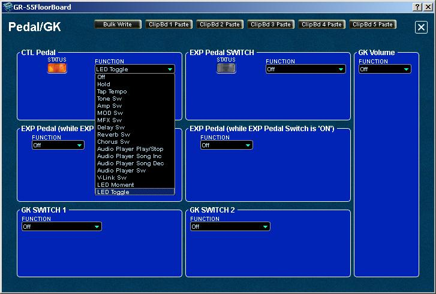

IndexEditing Pedal/GK Settings
NOTE:
The following sections describe "PATCH level" parameters affecting the current KATANA patch only. Also very important to know is that
any settings made in the SYSTEM and MASTER configurations
will take precedence over conflicting patch level PDL/GK and Assigns function settings.
NOTE:
When you make a change to PDL/GK parameters in the editor or in the
KATANA, changes are not saved automatically to the KATANA must be written
before they are in effect.
The PDL/GK editor panel allows you to edit the following "system level" parameter functions:
- CTL Pedal Status and Function
- EXP Pedal Switch Status and Function
- GK Volume Function
- EXP Pedal Function (while the EXP Pedal Switch is 'OFF')
- EXP Pedal Function (while the EXP Pedal Switch is 'ON')
- GK Switch 1 Function
- GK Switch 2 Function
You can access the above PDL/GK Settings by clicking the PDL/GK button at the top of the editor's main panel:

The Pedal/GK panel opens. Pedal/GK Settings

CAUTION: When you make a change to Pedal/GK parameters in the editor or in the KATANA, it is automatically written to the KATANA.
Changing the Pedal Assignments for Each Patch
This
panel can operate on a per patch basis. However, you must first
configure the System level Pedal and GK Settings to use "Patch
Settings". Otherwise, the controls will operated globally and have the
same effect on each patch.- FIRST, in the SYSTEM panel, in the Select field, click System Pedal and GK, and then change the setting of the
desired controller (CTL, EXP, EXP ON, EXP SW, GK S1/S2, GK VOL) to
“PATCH SETTING.” For details, see
“Settings for the Entire KATANA (SYSTEM)” (owner's manual p. 69).
- Select the patch whose pedal assignment you want to change.
- Then, on the Pedal/GK panel, change the assignment of
the desired controller (CTL, EXP, EXP ON, EXP SW, GK S1/S2, GK VOL) to
the desired setting. For details, see “Patch Settings (MASTER)” (owner's manual p. 54).
- Save the patch.